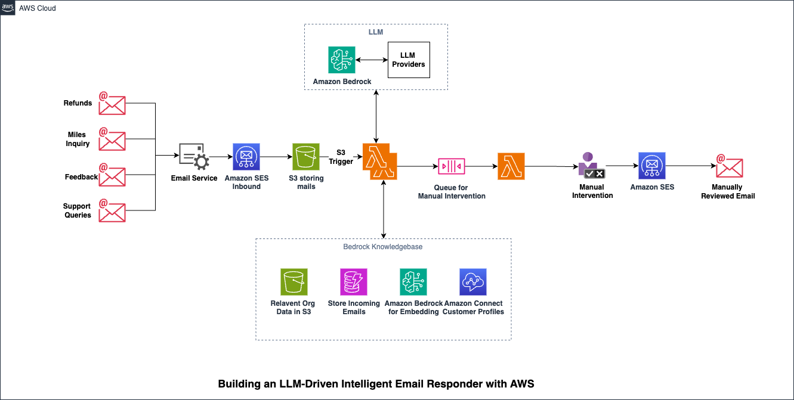

Handling customer emails efficiently is critical for any organization. Common queries like complaints, refunds, inquiries, or feedback often consume a significant portion of customer service resources. Introducing the intelligent email responder—a system designed to streamline email processing using the power of AWS services and Generative AI. In this blog post, we will walk you through the design of an intelligent email responder that leverages Amazon Bedrock, AWS Lambda, and other serverless technologies to provide automated and context-aware responses while accommodating manual intervention when necessary.
Organizations often deal with a high volume of emails that span various categories such as refunds, support queries, and feedback. Manually handling these emails can be inefficient, leading to slower response times and higher operational costs.
Solution Overview

The proposed architecture integrates Amazon Bedrock into the workflow, enabling seamless use of LLMs for more sophisticated processing and automation. This solution is designed to:- Automatically process incoming emails using Amazon SES and store them in Amazon S3.
- Leverage LLMs for natural language understanding through Amazon Bedrock.
- Enable manual intervention for all responses to ensure accuracy and appropriateness.
- Build a knowledge base that continuously improves over time, using embeddings and customer profile data.
- Provide robust and scalable email handling, ensuring quick and accurate responses.
Architecture Walkthrough
1. Email Ingestion
Customer emails related to refunds, feedback, or inquiries are received through the corporate email exchange. These emails are processed by an email service and routed to Amazon SES Inbound, which writes the email payloads to Amazon S3.
2. Triggering the Workflow
An S3 event trigger initiates an AWS Lambda function. This function processes the email payload and invokes Amazon Bedrock to extract intent and context using LLMs.
3. Leveraging Amazon Bedrock
Amazon Bedrock plays a central role in the solution by integrating LLM providers like Anthropic Claude, AI21 Labs Jurassic-2, and Amazon Titan models, each offering unique strengths for different tasks. These models are used to:
- Comprehend the email's language and intent: Leverage models such as Anthropic Claude for understanding nuanced context and customer emotions.
- Generate context-aware responses: Utilize Amazon Titan models for creating highly accurate and relevant email replies tailored to customer concerns.
- Classify queries for appropriate handling: Deploy AI21 Labs Jurassic-2 for its strong capability in reasoning and classification, ensuring every email is directed for proper review and response.
4. Queueing for Manual Intervention
For all cases, the Lambda function routes the generated email responses to a queue for manual intervention. Customer service agents can review and refine the responses through this queue. Once approved, updated responses are sent back to the customer using Amazon SES.
5. Building a Knowledge Base
This architecture includes a Bedrock Knowledge Base where:
- Organizational data is stored in Amazon S3.
- Incoming emails are logged for historical analysis.
- Amazon Bedrock generates embeddings to enhance email understanding.
- Customer profiles are updated through Amazon Connect, improving personalization.
Tuning the Prompts for Better Email Handling
The effectiveness of the intelligent email responder is enhanced by well-designed prompts. Below are examples of prompt engineering techniques used in this solution:
Example Prompts for LLM Processing
Input Parsing:
- Extract essential information from the email, such as:
- Flight number
- Date
- Specific issue/intent (e.g., delays, lost baggage, service quality)
- Use natural language processing (NLP) to detect complaint types.
- Retrieve customer data from Unified Customer Profiles for Travelers and Guests using agentic flow.
LLM Instructions for Customer Support:
You are a senior customer support representative for [Airline Name]. Your primary objectives are:
- Listen empathetically to customer complaints.
- Validate and understand the specific grievance.
- Demonstrate genuine care and concern.
- Provide appropriate solutions or compensation.
Communication Guidelines:
- Use a warm, compassionate, and professional tone.
- Acknowledge the customer's feelings first.
- Provide clear, actionable solutions.
- Maintain a helpful and solution-oriented approach.
Complaint Handling Process:
- Empathy Stage: Acknowledge the customer's frustration and validate their experience.
- Customer Verification: Confirm customer details in the database and check complaint history.
- Resolution Strategy:
- For first-time issues: Offer sincere apologies and a goodwill gesture (e.g., bonus miles).
- For recurring issues: Generate compensation coupons with clear terms and conditions.
Special Handling:
If the complaint is unclear or cannot be resolved automatically, respond with "unable to resolve" and forward the email to the manual intervention queue.
Conclusion
The intelligent email responder demonstrates the power of AWS's serverless and Gen AI-driven services to revolutionize customer email handling. By leveraging Amazon Bedrock and integrating it with traditional AWS tools like SES and Lambda, this solution ensures faster, more accurate responses, reduced manual workloads, and a continuously improving knowledge base.
With prompt engineering as a core part of this architecture, the system gains a nuanced ability to understand and address customer needs, making it a game-changer in customer service automation.
This post was originally published on AntStack's Blog.